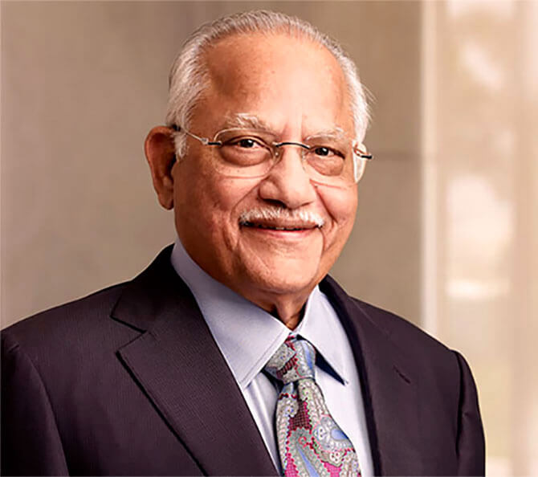

|  |
Dr. Rama. Reddy Founder, Chairman Dr. Rama Reddy, the visionary Founder-Chairman of Medicare Hospitals is widely acknowledged as the architect of modern Indian healthcare. He is best described as a compassionate humanitarian, who dedicated his life to bringing world-class healthcare within the economic and geographic reach of millions. The institution that he envisioned and built – Medicare Hospitals, steered a revolution and marked the birth of the private healthcare industry in India introduced international quality healthcare to India, at a cost that was a fraction of comparable costs in the western world.... |
|
Dr. Preetha Reddy Vice Chairperson, Medicare Hospitals Enterprise Limited |
|
Ms. Shobana Kamineni Executive Vice Chairperson, Medicare Hospitals Enterprise Limited |
|
Ms. Suneeta Reddy Managing Director, Medicare Hospitals Enterprise Limited |
|
Ms. Sangita Reddy Joint Managing Director, Medicare Hospitals Enterprise Limited |